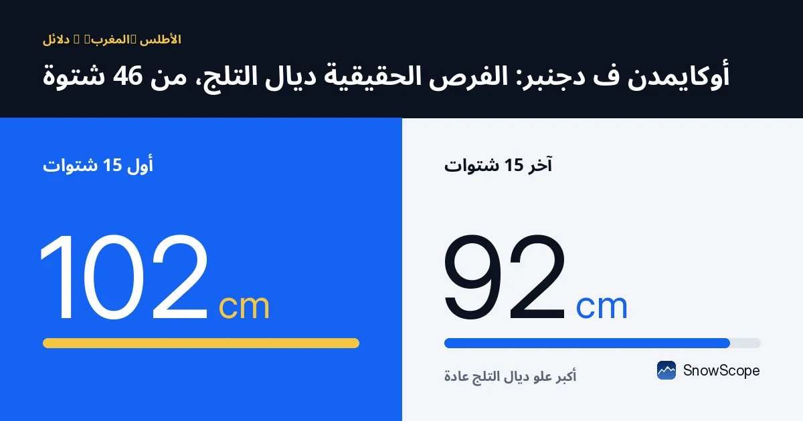

أوكايمدن ف دجنبر: الفرص الحقيقية ديال التلج، من 46 شتوة
دجنبر فـ Oukaïmeden هو اليسير. شي 15 دجنبر عادي يعطيك بغاية 16 سم فـ الجهة المتوسطة (2929 م)، و بغاية 11 % ديال الشتوات جابت أساس ديال 50 سم بحال دالك الوقت. طيب بالقصد ديال البلاويات، ماشي ديال التاريخ.
شوف توقعات التلج مباشرة ديال Oukaimden ski resort فالتطبيق ديال SnowScopeالعلو ديال التلج، التنبيهات والخريطة 3D، فابور.
العلو ماهو المهم بحال ما تتصور هنا
Oukaïmeden كاين فـ الأطلس العالي، والبيستات ديالها من 2600 م فـ القاع حتى 3258 م فـ الفوق. دجنبر الجهات الثلاث قريبة بشي غريب: 15 دجنبر شتوة عادية تعطيك 15 سم فـ القاع، 16 سم فـ الجهة المتوسطة و 17 سم فـ الفوق. الأطلس ماينفعش العلو بحال ما تنفع الجبال الأوروبية. مسارات البلاويات والذوبان بين الواحد والآخر هوما اللي يشكلو الشهر أكثر من متري الارتفاع.
التلج الأول اللي يبقى عادة يجي قرب 5 نونبر، لاكن يجي ويروح. بزاف ديال الساقطات ديال نونبر تختفي فـ الأيام.

الأرقام حسب التاريخ
أول دجنبر رقيق: 1 دجنبر، شتوة عادية تعطيك 12 سم فـ الجهة المتوسطة، و 28 % ديال الشتوات قريبة ديال التفريغ (أقل من 5 سم). أسبوعين بعد (15 دجنبر) عندك 16 سم فـ شتوة عادية، 20 % باقي قريبة ديال التفريغ، و 43 % عندهم 25 سم أو أكثر. الميلاد يجيب 20 سم و 41 % ديال الشتوات عندهم 25 سم أو أكثر. ليلة رأس السنة، 24 سم هو العادي و النصف ديال جميع الشتوات طاح 25 سم.
علامة 50 سم—أساس تزلج حقيقي—نادر يجي قبل 15 دجنبر فـ الجهة المتوسطة: بغاية 11 % ديال الشتوات. يجي أكثر بـ 31 دجنبر (15 %) و أكثر بالقمة (15 %، بعد 20 % بـ نهاية السنة).

شنو الأسبوع اللي ممكن يخدم
إذا دبيت تدور أسبوع فيه التلج العادي وصل 50 سم فـ الجهة المتوسطة، الحظوظ رقيقة. بغاية 4 % ديال الشتوات يشوفوها فـ الأسبوع الأخير ديال نونبر حتى 6 دجنبر، 13 % فـ الأسبوع التاني ديال دجنبر، 11 % فـ الثالث و 13 % فـ الرابع. ماشي أسبوع مضمون. نهاية سيمانة واحدة كتاع بعد بلاوية أكثر شي تجيب من أسبوع كامل ديال التلج الغميق.
الحماية الحسن هي تشوف التوقعات و تروح فـ النهار أو التنين بعد البلاوية. أول دجنبر نادر يعطيك حاجة؛ آخر دجنبر هو الرهان الأحسن.
كاين شتوة ديال دجنبر عظيم
واحد من عشرة شتوات جاب دجنبر جميل: 50 سم فـ الجهة المتوسطة 15 دجنبر و 53 سم فـ الميلاد. الشتوة اللي فاتت (2025-26) برهنت هاد الحاجة ممكنة. بدات بشي متوسط—33 سم فـ الجهة المتوسطة 15 دجنبر—لاكن بعد طاحت بشي حاد لـ 78 سم يوم الميلاد، و وصلت آخر الشيء لـ 132 سم فـ الموسم كامل مع 149 نهار ديال التلج.
فـ التاريخ الطويل، دجنبر ماتبدل بزاف. التلج العادي فـ نص دجنبر فـ الجهة المتوسطة كان 14 سم فـ الشتوات 1980-81 لـ 1994-95 و 11 سم فـ الشتوات 2011-12 لـ 2025-26. فـ جميع الحقبات، 40 % ديال الشتوات طاحت فوق 25 سم بحال دالك التاريخ. دجنبر قريب ديال ما يتعقل دابا بحال ما كان فـ أربع دجاجات.
شنو اللي تواجهه فـ نص نونبر
13 نونبر 2026، خريطة ديال التلج ديالنا ضحات 0 سم فـ جميع الارتفاعات. ماكان منتظر شي تلج فـ الأسبوع اللي جاي. هاد ماهيش حاجة غريبة نص نونبر. الموسم ديال الأطلس توليفة فـ مارس، كاين الجهة المتوسطة عادي تهضم 53 سم. نونبر و دجنبر هوما شهور البناء. تتزلج فيهم كاين البلاويات، ماشي حسب التاريخ.
لبس الطبقات، شوف التوقعات كل نهار و حجز التواريخ اللي تقدر تبدلها. Oukaïmeden يعطيك الصبر أكثر من التخطيط.
نصايح للي كيتزلجو
- ماتحجزش نقلة ديال دجنبر أسابيع قبل: استنى البلاوية فـ التوقعات، بعد روح فـ النهار أو التنين بعد ما تطفي.
- شوف خريطة SnowScope الصباح اللي قبل ما تروح؛ بلاوية واحدة تقدر تحول بيست فارغة لـ نهار تزلج.
- التلج ديال أول الموسم رقيق و الصخور تاحتا: بقى فـ البيستات المقصودة و سول المحطة شنو البيستات المفتوحة.
- دجنبر يسير هنا؛ فبرير و مارس أحسن إذا دبيت التلج الغميق مضمون، لاكن تحتاج زيارة أطول للمنطقة.
على هاد الأرقام
العلو ديال التلج فالمحطات هو أكثر تلج فالجهة الفوقانية فالتاريخ المكتوب؛ هادو تقديرات لمنطقة، ماشي قياس فنقطة وحدة. التوقعات يمكن تتبدل. ديما شوف النشرة الرسمية ديال الانهيارات قبل ما تخرج من البيست.
كيفاش تستاشهد بهاد المقال
للبحث، التعليم ولا الصحافة: الأرقام والرسومات تقدر تعاود تخدم بيهم بحرية تحت CC BY 4.0 مع هاد الاستشهاد.
SnowScope (2026), أوكايمدن ف دجنبر: الفرص الحقيقية ديال التلج، من 46 شتوة, https://snowscope.app/blog/ar/2026/11/oukaimeden-decembre-chances-de-neige-46-hivers.html, تشاف ف 2026-11-14
SnowScope (Atlas Labs). (2026, November 14). أوكايمدن ف دجنبر: الفرص الحقيقية ديال التلج، من 46 شتوة. SnowScope snow reports. https://snowscope.app/blog/ar/2026/11/oukaimeden-decembre-chances-de-neige-46-hivers.html
BibTeX
@misc{snowscope2026oukaimedendecembrechance,
author = {{SnowScope (Atlas Labs)}},
title = {أوكايمدن ف دجنبر: الفرص الحقيقية ديال التلج، من 46 شتوة},
year = {2026},
month = nov,
howpublished = {\url{https://snowscope.app/blog/ar/2026/11/oukaimeden-decembre-chances-de-neige-46-hivers.html}},
note = {Published 2026-11-14 13:29 UTC; accessed 2026-11-14}
}· CC BY 4.0 · الطريقة، الداتا والأدوات →
Oukaimden ski resort: التلج والحرارة حسب العلو، هاد الشتا مقارنة مع اللي فاتت (الأدوات) →
تابع Oukaimden ski resort
فابور: ميساج ملي يجي التلج، والتوقعات كل صباح.
تقارير أخرى ديال التلج

كناش عملي على Oukaïmeden فالأطلس الكبير: إمتى كيجي التلج غالبا، شحال، أشمن جهات تختار وكيفاش توصل من مراكش.

Oukaimden طاح فيها 14 سم ديال تلج جديد ف 72 ساعة اللي فاتو، منهم 5 سم ف 24 ساعة اللي فاتو. دابا فيها تقريبا 3 سم فالجهة الفوقانية، حسب الموديل ديال …

لا توجد تلج بعد في Oukaïmeden يوم 12 نونبر. قمم الأطلس ما فيها حتى حاجة؛ الموسم الشتوي عادة كايكون فأقصى حاله فشهر مارس بـ 58 سم في الجهة الفوقانية.